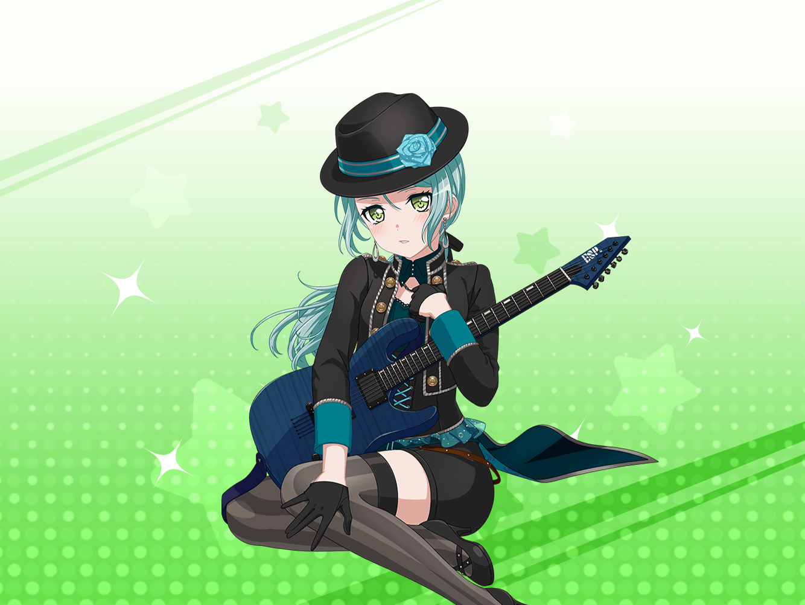

CiRCLE ロビー
紗夜
あら……？ {{userName}}さん。
こんにちは、今は休憩中ですか？
紗夜
お疲れ様です。私もちょうど、個人練の合間に
休憩していたところでした
紗夜
なにか考え込んでいそうだった？ 私が、ですか？
紗夜
そうですね……そこまで深刻なことではないのですが、
少し考え事をしていました
紗夜
近頃、姉のあり方について考える出来事があったんです
紗夜
巴さんとあこさんの件はご存知ですか？
紗夜
……そうでしたか。
あの時、巴さんが姉として出した結論に驚いたんです
紗夜
妹であるあこさんに、自分の思ってることはあえて伝えず、
自分の行いで姉らしさを見せていく、と……
紗夜
……私は、日菜に自分のすべてをぶつけました。
その上で、彼女の姉でいたいと、そう伝えたんです
紗夜
ええ、そうなんです。私と巴さんの出した答えは
正反対だったんです。それでも、二人とも姉であることには
変わりありません
紗夜
以前の私は『姉ならこうあるべき』と１つの答えに
とらわれていました。そのせいで、日菜との関係も
あまりよくないものになっていました
紗夜
自分は姉として不正解な存在なのだと、ふさぎこんでしまいました
紗夜
……今思えば、なんて頭が固いのだろうと思いますが
紗夜
巴さんを見ていて、気付いたんです
紗夜
姉にはいろいろな形があり、そのどれもが正解なのだ……と
紗夜
ふふ、気がつくのにだいぶ時間がかかってしまいましたけれど
紗夜
人との関わりは、本当にいろいろなことを気づかせてくれますね
紗夜
さて、私はそろそろ練習に戻ります。
今は姉ではなく、Roseliaの一員として、練習にきていますから